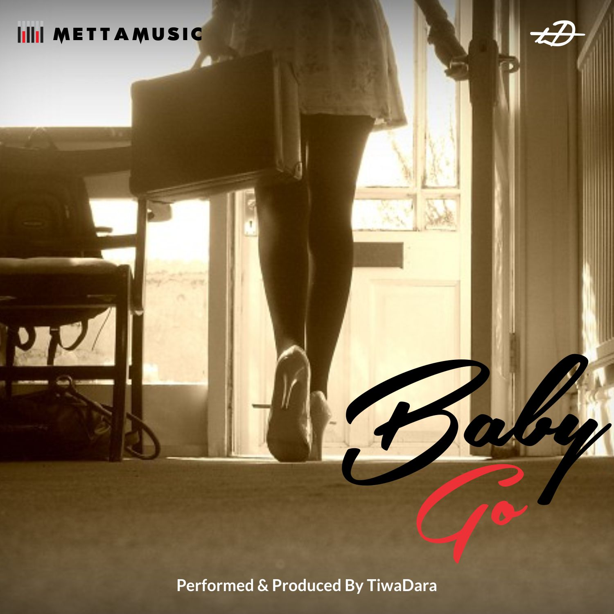

"I've Got Soul and Groove"
Singer · Songwriter · Producer · Sound Engineer
Electronic Press KitTiwaDara is a conduit for emotion, and a bridge between worlds — blending music, culture, and raw humanity. Through music, he channels feelings that are both universal and deeply personal, creating a space where listeners connect with themselves and their heritage.
"TiwaDara channels raw emotion through his music, blending heritage and modern sound to create something timeless and authentic."
A rising voice in the global music scene from Lagos, Nigeria, TiwaDara (born Babalola Tiwalola Oluwadara) blends the rich, rhythmic beats of Afro-Fusion with the smooth vibes of Alternative R&B and Soul. He first emerged in 2016 with a debut single that showcased his ability to fuse soulful melodies with intricate Afrobeat rhythms, and his music often explores themes of love with eclectic production. He has since released four projects — Renegade, Jigsaw, Collision (a joint project with Deena Ade), and Soul & Groove, which was listed among the best albums of 2020.
He is also a producer and sound engineer, known for an atypical approach to production proven across collaborations and productions with Deena Ade, Davina Oriakhi, Mo'believe, GoodGirl LA, Ilaye, and Dunnie, released through MettaMusic.
TiwaDara is poised to become one of the leading voices in the new wave of Nigerian artists taking Afro-Fusion to the global stage — bringing a fresh perspective and an undeniable talent that continues to captivate audiences worldwide. His ability to seamlessly fuse genres and his commitment to authenticity have made him a standout artist in the Nigerian music industry, using his music as a tool for storytelling and cultural expression.
"That I'm amazing and unpredictably mind-blowing." — on what he wants people to know about him as an artist
"Creating something like I've never heard before and watching people listening with glee. Recently, I saw someone cry while listening to my unreleased music. I can't explain the feeling but these are precious memories." — on the best part of being an artist
Unafraid to question norms, flip perspectives, and innovate. He brings people together through shared emotions, culture, and a love for music — always digging deeper into stories, relationships, and ideas, turning the mundane into the profound.
"For those who feel deeply, honor their roots, and seek music that echoes their innermost truths."
People who experience life through their emotions and seek music that speaks to their inner world; listeners who embrace their culture while navigating modern identities; those who are okay being vulnerable, seeking solace, validation, and joy in music that mirrors their truths. It's okay to be me, it's okay to make mistakes, it's okay to grow.
"Emotional honesty, cultural pride, and the power of simplicity in creating universal connection."
Creating music that embraces vulnerability, allowing listeners to face and accept their feelings; celebrating roots — honoring the sounds, symbols, and stories of heritage while exploring new creative horizons; stripping away excess to focus on what matters: the feel, the soul, the connection. Freeing yourself and others from the confines of tradition, societal expectations, and fear; creating bridges between people, cultures, and emotions — reminding listeners they're not alone. Not here to conform — here to challenge, inspire, and spark change (first project: Renegade).
"Freedom, connection, depth, and purposeful rebellion. TiwaDara's music inspires self-discovery and challenges the world to see differently."
Protecting and elevating African culture — not just as a source of inspiration, but as a living, breathing legacy — by supporting indigenous languages, traditional arts, and cultural education. Advocating for mental health awareness, especially in African and global communities where it is often stigmatized, and promoting the healing power of music and safe spaces for emotional vulnerability and expression. Giving the next generation the tools and confidence to express themselves authentically — supporting access to music education, creative spaces, and mentorship for young African artists, and breaking societal molds that stifle individuality or creativity.
A musical journey on personal growth, love and aspirations.
VMCD highlights TiwaDara's emerging sound and style through introspective tracks exploring personal growth and aspirations — the journey from a simple, rural mindset to the ambitions of urban life, and the love and companionship that inspire the reach for more along the way.
| # | Track | Artist | Feature | Genre | TikTok Timestamp | Producer |
|---|---|---|---|---|---|---|
| 1 | No Go Far | TiwaDara | Joyce Olong, 3rty | Afropop, Jazz | 0:55 | TiwaDara |
| 2 | Farabale | TiwaDara | — | Afrohouse, Afropop | 0:17 | AndroFlexin |
| 3 | Firelight | TiwaDara & Bigfootinyourface | — | Afro Soul, Jazz | 1:22 | Bigfootinyourface |
| 4 | Empty Room | TiwaDara | — | Afropop, R&B | 1:48 | TiwaDara |
| 5 | PDA | TiwaDara | — | Afropop, Afrobeats | 1:20 | Dunnie |
| 6 | Nonstop | TiwaDara | — | Dancehall, Afropop, Afrobeats | 1:18 | TiwaDara & AndroFlexin |
| 7 | Peace | TiwaDara | Banke | Ballad, Soul | 1:29 | TiwaDara |

Baby Go MettaMusic Baby Go Rmx feat. EngoOther notable collaborators: Dunnie, GoodGirl LA.


Socials & Streaming Platforms (click/tap to view)
Management & Contact
Booking & Press
Contact details to be added — drop in a management/booking email here.
Official Site
tiwadara.comtiwadara.com/about
linktr.ee/tiwadara
Label
MettaMusic